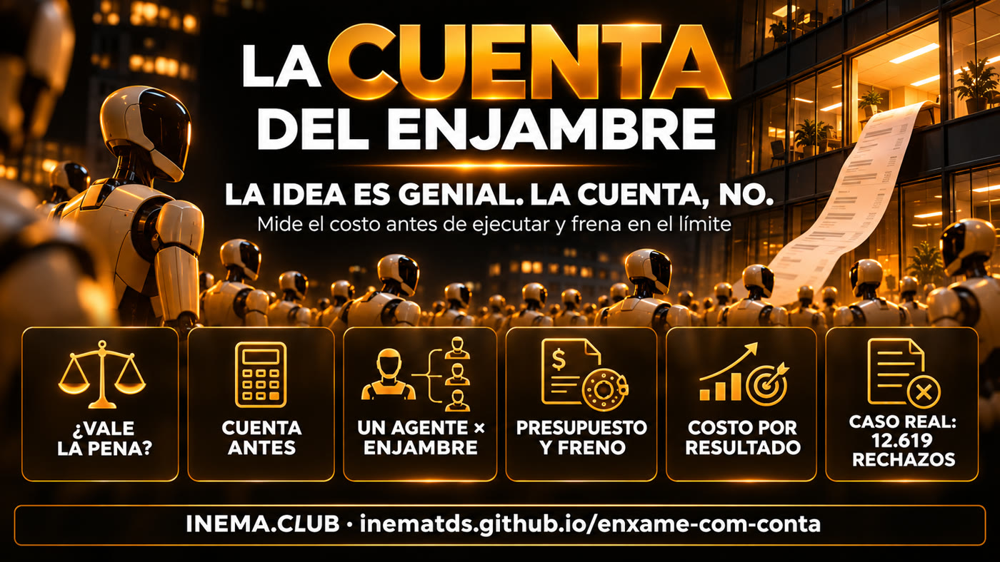

El video muestra a diez agentes trabajando juntos. No muestra la factura. Cada agente vuelve a leerlo todo, conversa con los demás y repite lo que salió mal, y tú pagas cada palabra. La Ficha de la Cuenta, con dos scripts gratis, hace los cálculos antes de ejecutar y pone un límite al gasto.
Un enjambre de agentes es cuando varias IA trabajan juntas en la misma tarea, cada una en una parte. Funciona, pero cuesta mucho más: la propia Anthropic midió unas 15 veces más texto procesado que en un chat normal. La Ficha de la Cuenta es una hoja breve para quienes piensan usar enjambres en el trabajo: pregunta si la tarea lo requiere, compara el costo con un solo agente y fija un límite y un freno antes de ejecutar. El kit gratis incluye la ficha y dos scripts en Python que hacen los cálculos y controlan el gasto. Para entenderlo, solo tienes que leer; para usar el kit, necesitas Python 3.

El video explicativo del kit aparecerá aquí cuando se publique. Mientras tanto, las secciones siguientes lo explican todo en texto.
En un enjambre, nadie trabaja gratis para los demás. Cada agente recibe todo el contexto, lee lo que enviaron sus compañeros, escribe su parte y, si algo sale mal, lo repite. Todo eso es texto que entra y sale del modelo, y pagas por ese texto.
Cada agente vuelve a leer el contexto (todo lo que necesita saber para trabajar) y la tarea en cada ronda. Seis agentes en tres rondas son dieciocho lecturas, no una.
Los agentes intercambian mensajes. Uno escribe cada mensaje y los demás lo leen; así que se cuenta dos veces.
Quien revisa lee todo lo que entregaron los demás. Es buena idea, pero también tiene un costo.
Lo que vuelve de la revisión se hace de nuevo, y repetir multiplica el costo de la parte que falló.
El enjambre también tiene ventajas: en el mismo artículo, el sistema multiagente obtuvo un resultado un 90,2 % mejor que un solo agente en su evaluación interna. La pregunta no es si el enjambre funciona, sino si la mejora compensa el costo adicional.
La medida del kit es el costo por resultado útil: todo lo que gastaste dividido entre las entregas que alguien aprobó. Una ejecución rechazada cuenta como gasto, pero no como resultado.
| Gasto total | Entregas aprobadas | Costo por entrega buena | Tiempo promedio | |
|---|---|---|---|---|
| Un solo agente | US$ 1,20 en 3 intentos | 2 de 3 | US$ 0,60 | 17,7 min |
| Enjambre | US$ 9,30 en 3 intentos | 3 de 3 | US$ 3,10 | 7 min |
Cifras ilustrativas del ejemplo incluido en el kit. Cámbialas por las de tu tarea.
Entre el 15 y el 16 de noviembre de 2026, un programador automático de revisiones de video de aquí llamaba a la IA directamente, sin ningún control. La suscripción tiene un límite de uso semanal; cuando se agotó, se rechazó cada solicitud y el proceso siguió solicitándolas.
rechazos por límite de uso en unas 34 horas, alrededor de 400 por hora.
sin ninguna revisión de video. El trabajo útil se detuvo y nadie se dio cuenta.
de registros inútiles en el disco, en 13 mil sesiones que no hicieron nada.
de dinero: los rechazos no se cobran. La pérdida fue tiempo y trabajo detenido.
La ficha es un archivo de texto que copias a la carpeta de la tarea y completas. Si no puedes responder la primera parte, no montes el enjambre.
No necesitas esta parte para entender lo anterior.
Python 3 con la biblioteca estándar. No hay que instalar paquetes ni usar claves de API: los scripts no llaman a ningún modelo, solo hacen cálculos y deciden si se ejecuta tu comando.
Las cuatro partes anteriores, en formato de lista para marcar y completar.
estimar calcula los tokens y el costo del enjambre frente a un solo agente a partir de un plan. comparar lee las ejecuciones reales y calcula el costo por resultado útil y la conclusión.
Un freno para cualquier llamada a un agente (claude -p, codex exec o un script tuyo): se detiene ante el primer límite, tiene un máximo de llamadas y se para después de N fallos consecutivos. Varios procesos pueden compartir el mismo archivo de estado.
🧠 tú decides · ⚙️ el script del kit calcula · 🤖 tu agente trabaja, siempre a través del freno.
Solo Python 3 y el kit descargado. El freno usa el bloqueo de archivos del sistema (fcntl), así que funciona en Linux y macOS; en Windows, usa WSL.
Clona el repositorio y entra en la carpeta.
git clone https://github.com/inematds/enxame-com-conta cd enxame-com-conta
Los 15 tests deben pasar.
python3 -m unittest discover -s tests -v Ran 15 tests ... OK
Las salidas siguientes son reales: los scripts se ejecutaron con los ejemplos del kit. Las cifras de los ejemplos son ilustrativas.
Copia la ficha a la carpeta de la tarea. Si marcas menos de dos opciones en la parte 1, usa un solo agente y detente aquí.
mkdir -p minha-tarefa cp FICHA-CONTA.md minha-tarefa/
Copia el ejemplo y cambia las cifras por las de tu tarea. Los tamaños se expresan en tokens.
cp exemplos/plano-enxame.json plano.json
agentes: cuántos agentes tiene el enjambre (6)rodadas: cuántas rondas hace cada uno (3)contexto: lo que cada agente lee en cada ronda (20000)tarefa: el pedido en sí (2000)saida_por_agente: lo que cada agente escribe por ronda (3000)mensagens_por_rodada, tamanho_mensagem: conversación entre agentes (2 y 1500)revisores: cuántos revisan todo (1)retrabalho: fracción rehecha, de 0 a 1 (0.3)um_agente: el mismo trabajo hecho por uno solo: rondas y salida (4 y 8000)preco: US$ por millón de tokens, entrada y salida (3.0 y 15.0)Verás el costo de las dos opciones, cuántas veces más cuesta el enjambre y en qué se va el dinero (en %). Abajo aparece la salida con las cifras del ejemplo, sin cambios.
python3 conta.py estimar plano.json "enxame": {"entrada": 712400, "saida": 85800, "custo": 3.4242} "um_agente": {"entrada": 88000, "saida": 8000, "custo": 0.384} "multiplicador_tokens": 8.3 "onde_vai": {"trabalho": 63.1, "coordenacao": 8.6, "revisao": 5.1, "retrabalho": 23.1}
El modelo de costos es deliberadamente sencillo: sirve para comparar arquitecturas, no para predecir la factura al centavo. El cálculo real aparece en el paso 7.
En la parte 3 de la ficha, fija el máximo de agentes, llamadas y fallos consecutivos. Esas cifras se convierten en opciones del freno.
Todas las llamadas de la tarea usan el mismo archivo de estado. Si alcanzas el límite (429, «rate limit», «hit your limit»…), bloquea a todos durante --pausa-min minutos (60 por defecto).
python3 trava.py rodar \ --estado .trava.json \ --max-chamadas 40 \ --max-falhas 3 \ -- claude -p "…" # salidas: 75 = bloqueada por límite (no se llamó nada) # 76 = presupuesto de llamadas agotado # 77 = demasiados fallos seguidos
Cuando se bloquea, muestra este aviso:
[trava] limite detectado: bloqueada por 60 min para todos que usam .trava.json.
[trava] bloqueada (limite de uso); libera em 59 min. Nada foi chamado.
status muestra las llamadas, los fallos y los últimos eventos. liberar borra el bloqueo después de que hayas revisado lo ocurrido. Ambos usan .trava.json por defecto; si en el paso 5 usaste otro archivo, indica el mismo --estado.
python3 trava.py status {"chamadas": 1, "falhas_seguidas": 0, "bloqueada_ate": 0, "motivo": "", "ultimos": [{"rc": 0, "evento": "ok", …}]} python3 trava.py liberar # --zerar-chamadas también pone el contador en cero
Para la misma tarea, con un agente y con el enjambre: arquitetura, custo, aprovada, retrabalho, minutos.
cp exemplos/execucoes.json execucoes.json
arquitetura: um_agente (un solo agente) o enxame (enjambre), solo estos dos valorescusto: cuánto costó esa ejecuciónaprovada: true si alguien aprobó la entrega, false si noretrabalho: fracción rehecha, de 0 a 1minutos: cuánto tardóDespués ejecútalo con tu archivo. Abajo, la salida con el ejemplo:
python3 conta.py comparar execucoes.json "um_agente": {"aprovadas": 2, "custo_total": 1.2, "cru": 0.6, "minutos_medio": 17.7} "enxame": {"aprovadas": 3, "custo_total": 9.3, "cru": 3.1, "minutos_medio": 7.0} "veredito": "o enxame custa 5.2× mais por entrega aprovada e acerta 1.5× mais: só vale se cada entrega aprovada valer mais que 5.2× o custo de um agente só (mas foi 2.5× mais rápido: decida se o prazo vale isso)"
cru es el costo por resultado útil. La decisión final es tuya: conserva el enjambre solo si la mejora del resultado o el plazo justifican el costo adicional.
El kit crece con casos reales.
La Ficha de la Cuenta, los scripts y el caso real están gratis en inema.club, directamente en internet.
INEMA.CLUB